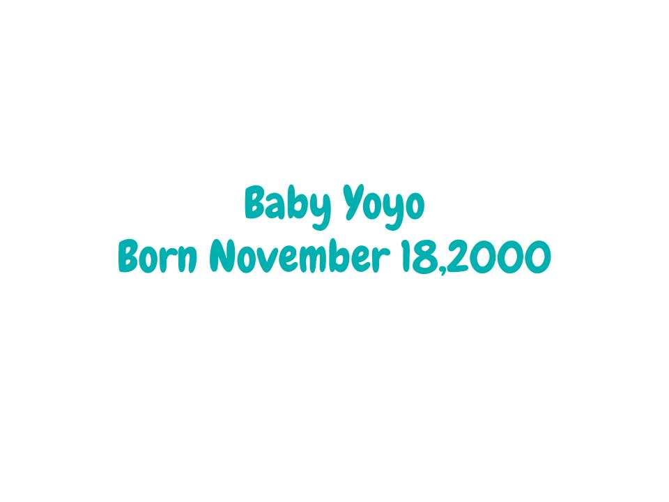
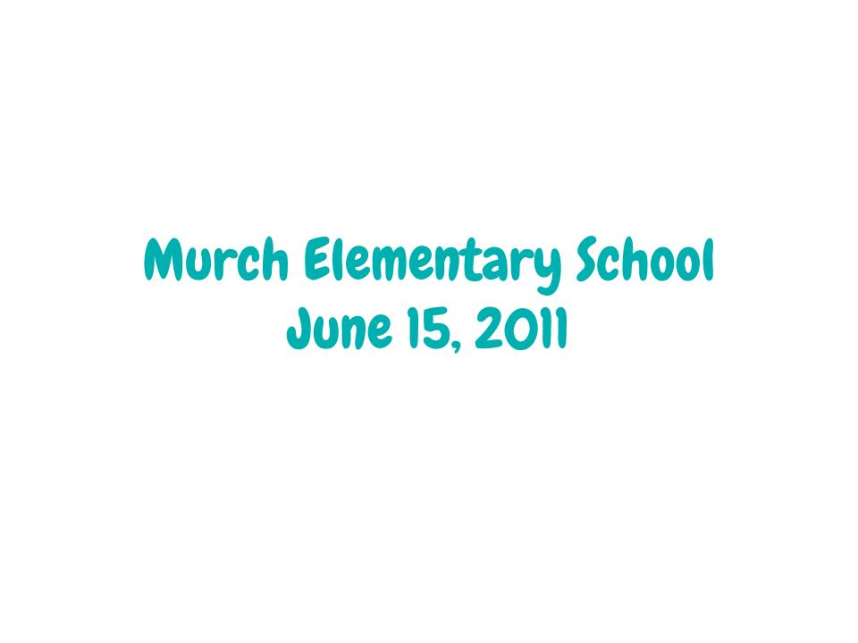
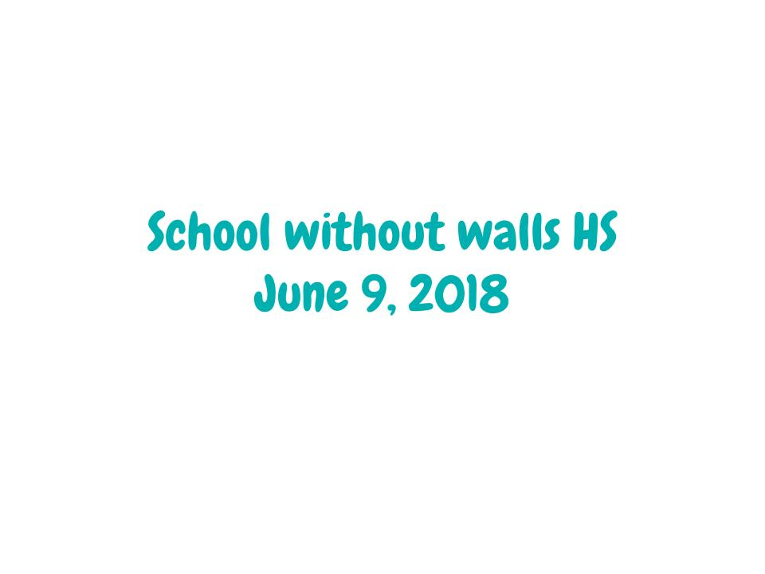
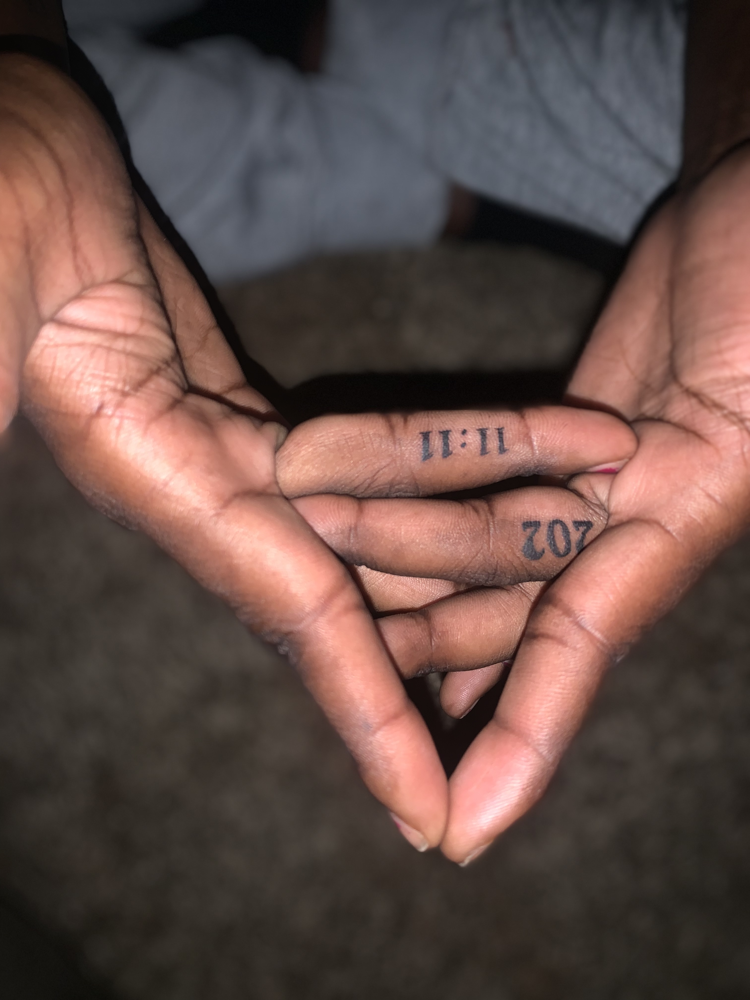
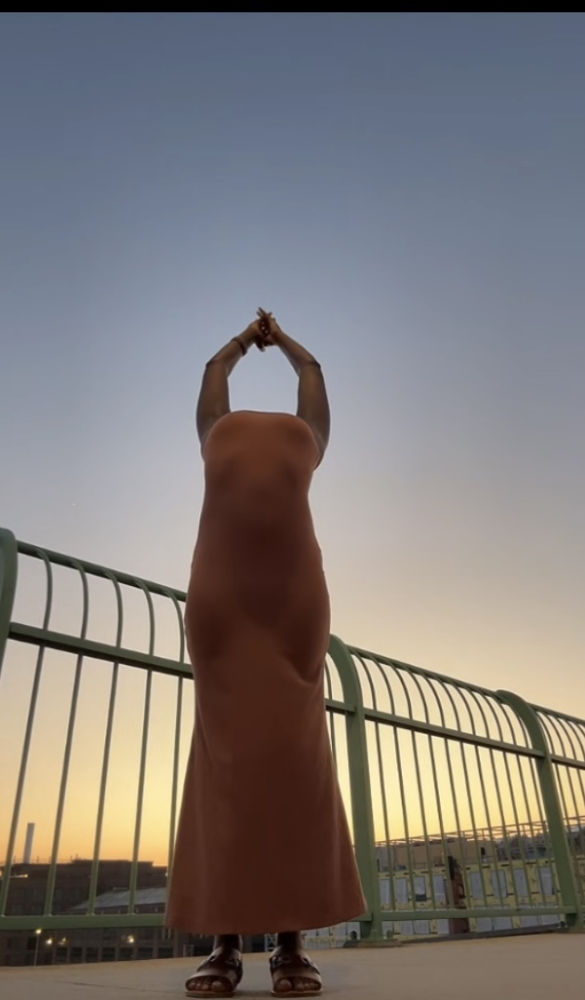

About Me
Get to know the person behind the portfolio

Hello, I'm Yoyo!
My name is Youhwa Mungai, but everyone calls me Yoyo. I'm a creative soul who believes that life is about exploration, growth, and finding beauty in unexpected places.
I've taken an unconventional path - dropping out of college twice - but I've learned that formal education isn't the only way to grow. Through my experiences, I've discovered that creativity, passion, and determination are the real drivers of success.
Currently, I'm seeking steady work while doing dog walks and focusing on my hobbies and creative expressions. Every day is an opportunity to learn something new and create something beautiful.
My Journey Through Time

The Beginning
A curious child with big dreams and endless imagination

Elementary Years
Discovering the joy of learning and making friends
Middle School
Finding my interests and developing my personality

High School
Exploring creativity and preparing for the future
Graduation
Celebrating achievements and looking forward to new adventures

Today
A creative individual pursuing passions and building the future
My Passions & Interests
Sports
I love playing basketball and flag football. Sports teach me discipline, teamwork, and the importance of pushing through challenges.
Music & Poetry
Music and poetry are my emotional outlets. They help me express feelings and connect with others on a deeper level.
Art & Creativity
From painting to photography, I love creating visual art. It's my way of capturing and sharing the beauty I see in the world.
Photography
Photography is my way of documenting life's precious moments and sharing different perspectives with the world.
Socializing
I believe in the power of human connection. Meeting new people and building relationships enriches my life.
Adult Coloring Books
A therapeutic hobby that helps me relax and express creativity in a structured, mindful way.
What I'm Up To Now
Seeking New Opportunities
I'm actively looking for steady work that allows me to grow professionally while maintaining my creative pursuits. I believe in finding a balance between practical needs and personal passions.
Dog Walking
Currently, I'm doing dog walks to support myself while I search for more permanent opportunities. It's actually been a great way to stay active and meet new people in my community.
Creative Projects
I'm always working on new creative projects - whether it's coding interactive applications, taking photographs, or exploring new artistic mediums. Creativity is my constant companion.

Finding balance and mindfulness through yoga and creative expression
Let's Connect
I'd love to hear from you! Whether you want to collaborate, chat about opportunities, or just say hello.
Email: Youhwamungai@gmail.com